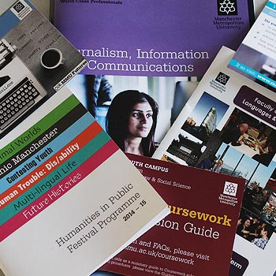

Our Courses
Degree Routes
There are three-degree routes available, which all consist of the same first year units.Year 1 is seen as a qualifying year, which will see students develop a solid basic level of knowledge and skills as well as becoming competent independent learners. Year 1 is the same for all 3-degree routes. Students have the choice to change their degree route after year one to focus and specialize in one area.
Information and communications (BSc)
The Information and Communication focuses on management and use of Information and Communication technologies. Year 2 offers core and optional units, which means students have the choice of Creative Digital Media Productions, Web Site Development and Web Languages. Year 3 involves Digital Assets Management, Information and Communications Portfolio, Systems Thinking and Organizational Resources and Technology, Audiences and Globalization. In an industry, which changes so rapidly, the information and communication route will allow graduates to be considered for roles in a huge variety of roles from teaching to systems management.
Digital Media and communications (BSc)
Digital media and communications suits creative minds with an interest digital media such as photography, film and more. As well as exploring the practical side of digital media and content development, there is also theory behind media, texts and ethics. Year 2 includes Creative Digital Media Production, Developing InfoComms Projects, Media Texts, Ethics, and Web Site Development. Year 3 will involve a Digital Media Portfolio amongst other units of Systems Thinking and Organizational Resources, Technology, Audiences and Globalization and User Experience Design. This is where students get the industry experience of seeing a project from an idea to a complete portfolio. Digital media will prepare students for digital and creative industries, which provide jobs roles from Media Development and design to information management.
Web Development (BSc)
Focusing on front-end web development, this route allows students to explore a giant industry creating their own projects from the very beginning Year 2 consists of the core units; Developing InfoComms Projects, Creative Digital Media Productions, Web Site Development and Web Languages. Year 3 will have prepared students to have to ability to start and manage a web development project. These skills will be used for the Web development portfolio while undertaking other units of Digital Assets Management, User Experience Design and Systems Thinking and Organizational Resources. Web Development will prepare a student for any front-end developer role. If a student, wishes to go into a different role there are a number of other skills developed of the course, which could prepare you for roles into project management or teaching.